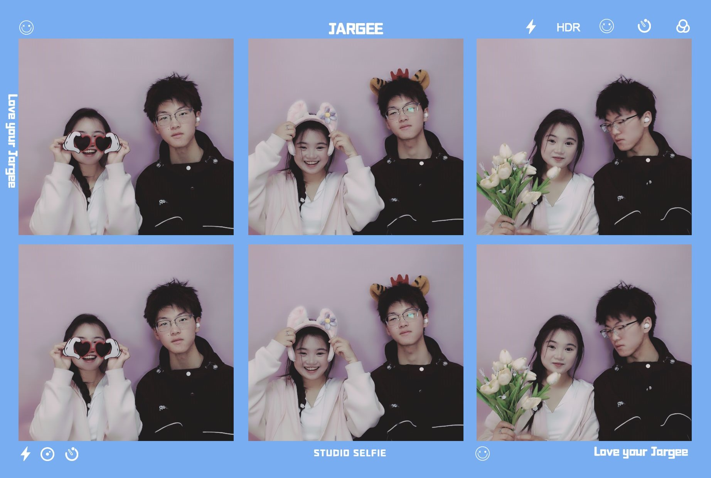

您好，等您见到这份礼物的时候，我们会是什么样子呢？会是在争吵的时候，作为给您的道歉礼物吗？那我们又会是因为什么而争吵呢？是我错怪你，还是你不理解我呢。 会是和现在一样和和睦睦，打打闹闹吗？我无时无刻不期待着与你相见，与你相处，看你笑着，说着，我觉得幸福是能够具象化的。 现在是我第一次对这份礼物进行板块整合，我有超级超级多的期待和想法，但我知道，我没有那么多的耐心，还有很多功能是需要额外学习的。我超级超级想让你看见这份礼物！！！ 目前为止，我还不会怎么把这个这份礼物放到网上，能够让你不需要从我这解压文件就能看到。
——————2024年10月28日
 尊敬的小小： 您好！ 针对我今日上午惹您不开心之事，我做出如下深刻检讨。 在你我二人的相处之中，您方已多次针对此类问题（同下“反话问题”）提出意见，我方虽然每次诚恳道歉，但一直未做出有深度，广度的思考和改变。今日，发觉我方在语言表达上，多次侵犯您方底线，让您感觉在与我方的相处中感到不适，对此，我方深表歉意，对不起。 于是，我方痛定思痛，深刻思考，决定从，我方，您方，以及我们方进行思考推理。 从我方来说，我方与较为熟悉的他人的日常相处中，习惯于攻击痛点，揭露短处，以此来博得他人与我吵闹的机会，据我反思，应该是我个人独处时，习惯于沉静，所以在和他人相处时，力求有喧闹的时刻，总结出来就是，我方在和他人相处，比较喜欢吵闹，所以养成了喜欢调动他人情绪，不喜欢顺着别人意思的坏习惯